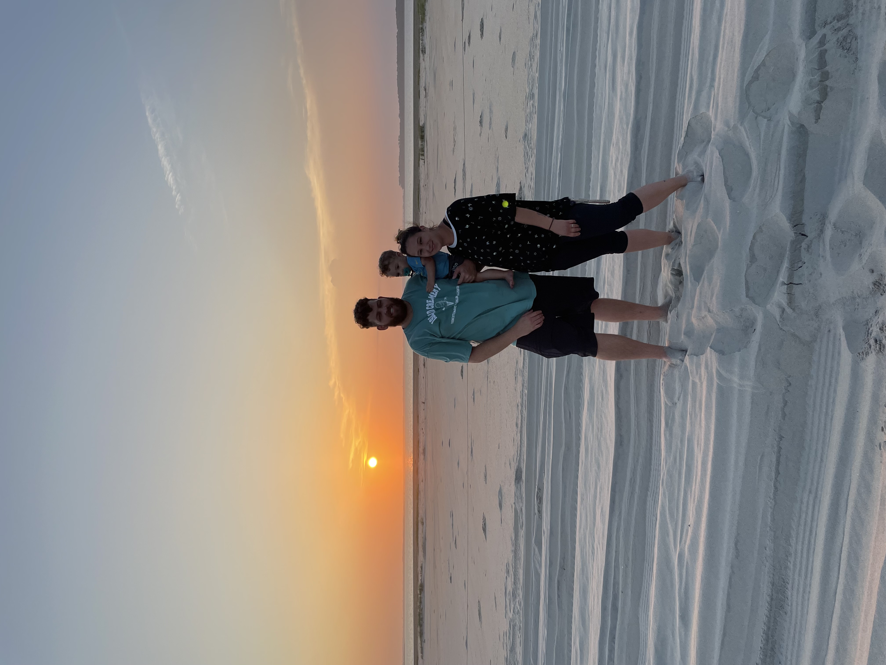

We are the Potter family! Jk, one day I will be a Potter too. We are a cool, weird, fam. Our little man is Jett. He's a total nut, but we have lots of fun together, so I might as well document it while trying to teach myself web develpment. Here's to 2022!
